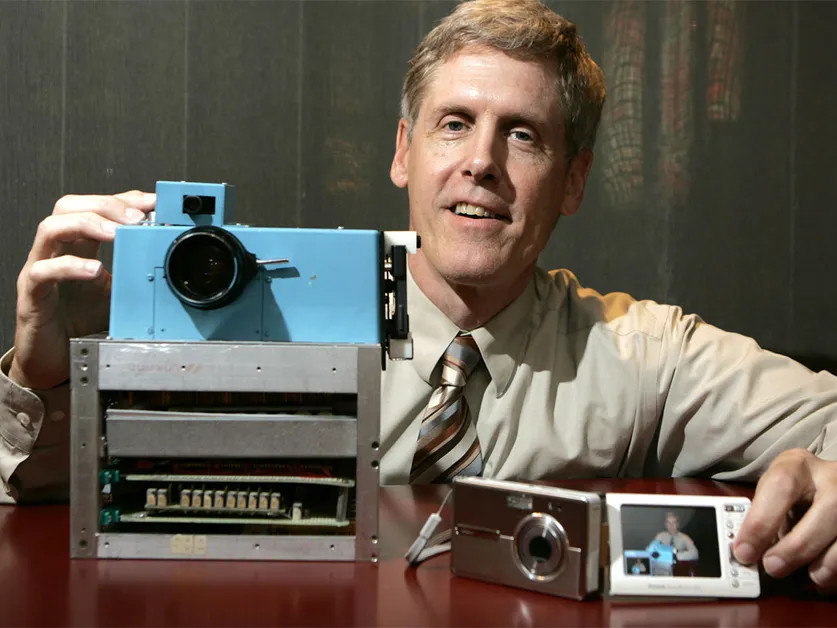

Licenca
To delo je na voljo pod pogoji slovenske licence Creative Commons 2.5:
priznanje avtorstva - nekomercialno - deljenje pod enakimi pogoji.
Celotna licenca je na voljo na spletu na naslovu http://creativecommons.org/licenses/by-nc-sa/2.5/si/. V skladu s to licenco je dovoljeno vsakemu uporabniku delo razmnoževati, distribuirati, javno priobčevati, dajati v najem in tudi predelovati, vendar samo v nekomercialne namene in ob pogoju, da navede avtorja oziroma avtorje in izdajatelja tega dela. Če uporabnik delo predela, kar pomeni, da ga spremeni, preoblikuje, prevede ali uporabi to delo v svojem delu, lahko predelavo dela ponudi na voljo le pod pogoji, ki so enaki pogojem iz te licence oziroma pod enako licenco.

Zaznavanje robov
Uporabna tehnika računalniškega vida je zaznavanje robov (ang. Edge detection), ki omogoča samodejno prepoznavanje mej med predmeti. Meje olajšajo segmentiranje slike (razčlenitev na ločene predmete ali področja), ki jih je nato mogoče ločeno prepoznati.
Primer slike s samodejno prepoznanimi robovi med predmeti.

Ogledali smo si že, kako lahko uporabimo konvolucijsko jedro za zameglitev slike. Ena od običajnih tehnik pri odkrivanju robov tudi uporablja konvolucijsko jedro. Če vrednosti pikslov na eni strani vsakega piksla pomnožimo z negativno količino in vrednosti pikslov na drugi strani s pozitivno količino ter nato rezultate združimo, bomo odkrili število, ki predstavlja razliko med piskli na obeh straneh. Ta postopek imenujemo iskanje gradienta slike.
Obstaja veliko dobrih algoritmov za zaznavanje robov, vendar je eden bolj znanih algoritem zaznavanja robov Canny (ang. Canny edge detector). Leta 1986 ga je razvil John F. Canny in je široko uporabljen v računalniškem vidu. Več o algoritmu lahko prebereš na Wikipediji.
Globina
Globina, to je razdalja med predmeti in kamero, je kritični del področja računalniškega vida. Globino uporabljamo v različnih aplikacijah in področjih, kot so na primer video igre in samovozeči avtomobili, ki morajo zaznati, kako daleč je vozilo pred njimi, da bi se izognili trkom.
Eden od načinov pridobivanja globinskih informacij je s pomočjo stereo vida. Stereo vid običajno uporablja dve kameri, ki sta druga ob drugi. Obe kameri posnameta isti prizor. Predmeti, ki se pojavljajo na obeh slikah, bodo na slikah v različnih položajih. Predmeti blizu kamere bodo imeli večje horizontalne razlike na obeh slikah, medtem ko bodo imeli bolj oddaljeni predmeti manjše horizontalne razlike. Na tak način pridobivajo globinske informacije tudi ljudje in številne druge živali. Vsako oko vidi nekoliko drugačno sliko, ki jo možgani uporabijo, da razberejo, ali je predmet blizu ali daleč.
Področje računalniškega vida se hitro spreminja, kar je posledica zelo hitrega razvoja kamer v zadnjih nekaj desetletjih. Ne samo, da se povečuje ločljivost kamer, ampak se kamere izboljšujejo tudi na druge načine. So bolj občutljive pri slabi svetlobi; povzročajo manj hrupa; lahko delujejo v infrardeči svetlobi (kar je uporabno za zaznavanje razdalj); in postajajo vedno cenejše. Dandanes je običajno, da uporabljamo več kamer, za snemanje iz različnih kotov ali za stereo vid.
Kljub zelo hitrim spremembam v zadnjem času so številne temeljne zamisli računalniškega vida prisotne že nekaj časa. Na primer, algoritem segmentacije »k-povprečnih vrednosti« so prvič opisali že leta 1967, medtem ko so prvi digitalni fotoaparat izdelali šele leta 1975 (to je bil prototip podjetja Kodak z ločljivostjo 100×100 pikslov).
Vir slike